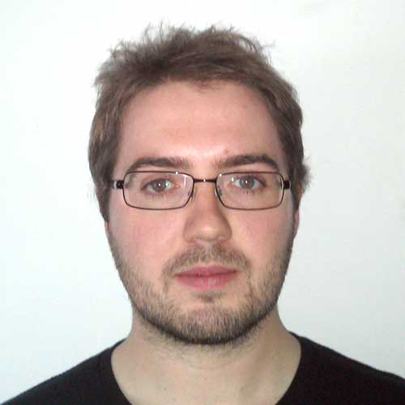

<div class="container front_page">
  <div class="row">
    <div class="col-md-2 logoface">
      
    </div>
    <div class="col-md-8">
      <h1>Tim Green</h1>
      <ul class='links'>
        <li><a href='mailto:timothy.green@gmail.com'>Email</a></li>
        <li><a href='/cv.pdf'>CV</a></li>
        <li><a href='http://twitter.com/tfgg2'>Twitter</a></li>
        <li><a href='http://github.com/tfgg'>GitHub</a></li>
        <li><a href='https://uk.linkedin.com/in/tim-green-6832886'>LinkedIn</a></li>
        <div style='clear:both;'></div>
      </ul>

      <p class='block-highlight'>I work at <a href="https://deepmind.com/">Google DeepMind</a> as a Research Engineer. I was previously a postdoc at the <a href='http://www.ox.ac.uk/' target="_blank">University of Oxford</a> in the <a href='http://mml.materials.ox.ac.uk/' target="_blank">Materials Modelling Laboratory</a>, where I also did my Ph.D. research.

      <p>My research was supervised by <a href='http://users.ox.ac.uk/~oums0549/' target="_blank">Jonathan Yates</a> and my thesis was entitled <em><a href='/thesis/abstract/'>Prediction of NMR J-coupling in condensed matter</a></em>. My research interests included computational materials science, density functional theory, quantum chemistry, condensed matter and nuclear magnetic resonance.</p>

      <p>I was also co-founder of <a href="https://democracyclub.org.uk/" target="_blank">Democracy Club</a>, an effort to improve UK citizens' experience of democracy using technology.</p>
      
      <h2>Research</h2>
      <ul class='publications'>
        <li>
            <div class="name"><a href="https://deepmind.com/blog/alphafold/">AlphaFold: Using AI for scientific discovery</a></div>
            <div class="journal">Blog post, 2018, publication to follow</a>
            <div class="authors">Richard Evans, John Jumper, James Kirkpatrick, Laurent Sifre, <span class='me'>Tim Green</span>, Chongli Qin, Augustin Zidek, Sandy Nelson, Alex Bridgland, Hugo Penedones, Stig Petersen, Karen Simonyan, David Jones, David Silver, Koray Kavukcuoglu, Demis Hassabis, Andrew Senior</div>
        </li>
        <li>
            <div class="name"><a href="https://arxiv.org/abs/1807.01281">Human-level performance in first-person multiplayer games with population-based deep reinforcement learning</a></div>
            <div class="journal"><em>arXiv</em>, 2018 [<a href='https://deepmind.com/blog/capture-the-flag/'>blog post</a>]</a>
            <div class="authors">Max Jaderberg, Wojciech M. Czarnecki, Iain Dunning, Luke Marris, Guy Lever, Antonio Garcia Castaneda, Charles Beattie, Neil C. Rabinowitz, Ari S. Morcos, Avraham Ruderman, Nicolas Sonnerat, <span class='me'>Tim Green</span>, Louise Deason, Joel Z. Leibo, David Silver, Demis Hassabis, Koray Kavukcuoglu, Thore Graepel</div>
        </li>
        <li>
            <div class="name"><a href="https://arxiv.org/abs/1711.09846">Population Based Training of Neural Networks</a></div>
            <div class="journal"><em>arXiv</em>, 2017</a>
            <div class="authors">Max Jaderberg, Valentin Dalibard, Simon Osindero, Wojciech M Czarnecki, Jeff Donahue, Ali Razavi, Oriol Vinyals, <span class='me'>Tim Green</span>, Iain Dunning, Karen Simonyan, Chrisantha Fernando, Koray Kavukcuoglu</div>
        </li>
        <li>
            <div class="name"><a href="https://arxiv.org/abs/1705.06950">The kinetics human action video dataset</a></div>
            <div class="journal"><em>arXiv</em>, 2017</a>
            <div class="authors">Will Kay, Joao Carreira, Karen Simonyan, Brian Zhang, Chloe Hillier, Sudheendra Vijayanarasimhan, Fabio Viola, <span class='me'>Tim Green</span>, Trevor Back, Paul Natsev, Mustafa Suleyman, Andrew Zisserman</div>
        </li>
        <li>
            <div class="name"><a href="http://dx.doi.org/10.1021/acs.inorgchem.6b01121">Investigating Unusual Homonuclear Intermolecular “Through-Space” J Couplings in Organochalcogen Systems</a></div>
            <div class="journal"><em>Inorganic Chemistry</em>, 2016</a>
            <div class="authors">Paula Sanz Camacho, David McKay, Daniel M. Dawson, Christin Kirst, Jonathan R. Yates, <span class='me'>Timothy F.G. Green</span>, David B. Cordes, Alexandra M.Z. Slawin, J. Derek Woollins, Sharon E. Ashbrook</div>
        </li>
        <li>
            <div class="name"><a href="http://dx.doi.org/10.1016/j.ssnmr.2016.05.004">Visualization and processing of computed solid-state NMR parameters: MagresView and MagresPython</a></div>
            <div class="journal"><em>Journal of Solid State Nuclear Magnetic Resonance</em>, 2016</a>
            <div class="authors">Simone Sturniolo, <span class='me'>Timothy F.G. Green</span>, Robert M. Hanson, Miri Zilka, Keith Refson, Paul Hodgkinson, Steven P. Brown, Jonathan R. Yates</div>
        </li>
        <li>
            <div class="name"><a href='http://pubs.acs.org/doi/abs/10.1021/jacs.5b03353'>Unusual Intermolecular “Through-Space” J Couplings in P–Se Heterocycles</a></div>
            <div class="journal"><em>J. Am. Chem. Soc.</em>, 2015, 137 (19), 6172&ndash;6175</div>
            <div class="authors">Paula S. Camacho, Kasun S. A. Arachchige, Alexandra M. Z. Slawin, <span class='me'>Timothy F. G. Green</span>, Jonathan R. Yates, Daniel M. Dawson, John D. Woollins and Sharon E. Ashbrook.</div>
        </li>
        <li>
            <div class="name"><a href='http://scitation.aip.org/content/aip/journal/jcp/140/23/10.1063/1.4882678'>Relativistic nuclear magnetic resonance J-coupling with ultrasoft pseudopotentials and the zeroth-order regular approximation</a></div>
            <div class="journal"><em>J. Chem. Phys.</em>, 2014, 140, 234106, <a href='http://arxiv.org/abs/1403.0524'>arXiv</a></div>
            <div class="authors"><span class='me'>Timothy F. G. Green</span> and Jonathan R. Yates.</div>
        </li>
        <li>
            <div class="name"><a href='http://pubs.acs.org/doi/full/10.1021/cm3016935'>Elucidation of the Al/Si Ordering in Gehlenite Ca<sub>2</sub>Al<sub>2</sub>SiO<sub>7</sub> by Combined <sup>29</sup>Si and <sup>27</sup>Al NMR Spectroscopy/Quantum Chemical Calculations</a></div>
            <div class="journal"><em>Chem. Mater.</em>, 2012, 24 (21), 4068&ndash;4079</div>
            <div class="authors">Pierre Florian, Emmanuel Veron, <span class='me'>Timothy F. G. Green</span>, Jonathan R. Yates, and Dominique Massiot.</div>
        </li>
      </ul>
      
      <h2>Posts</h2>
      <ul class='publications'>
        <li>
            2015-11-12 <a href="http://tfgg.me/2015/11/10/election-codes.html">Standard codes for UK elections</a>
        </li>
      </ul>
   
      <h2>Past talks</h2>
      <ul class='publications'>
        <li>
            <strong>Every election is unique(ly identified)</strong> <a href='/files/citizenbeta_december_2015.pdf'>slides</a><br/>
            <a href='http://citizenbeta.attending.io/events/citizenbeta006'>Citizen Beta</a>, <a href='https://twitter.com/nwspk'>Newspeak House</a>, 133 Bethnal Green Rd, London, 7 PM, 2<sup>nd</sup> December 2015.
        <li>
          <strong>Prediction of NMR J-coupling in condensed matter</strong><br/>
          <a href='http://www.tcm.phy.cam.ac.uk/~mdt26/esdg.html'>ESDG</a>, TCM, Cavendish Laboratory, University of Cambridge, 22<sup>nd</sup> April 2015.
        </li>
        <li>
          <strong>Helping citizens to better understand the General Election with online democratic tools</strong> <a href='/files/mysocial_january_2015.pdf'>slides</a><br/>
          <a href='http://lanyrd.com/2015/mysocial/'>#mysocial</a>, Jam Factory, Oxford, 7<sup>th</sup> January 2015.
        </li>
        <li>
          <strong>Ab-initio investigation of dynamics and J-coupling in Pb<sub>2</sub>ZnF<sub>6</sub></strong><br/>
          <a href='http://www.ccpnc.ac.uk/smarter4'>SMARTER4</a>, University of Durham, 3<sup>rd</sup> September 2014.
        </li>
        <li>
          <strong>Calculating J-couplings with Ultrasoft Potentials and Relativistic Effects</strong><br/>
          <a href='http://www2.warwick.ac.uk/fac/sci/physics/research/condensedmatt/nmr/conference_january2014/'>NMR Crystallography: Combining Experiment and Calculation</a>, University of Warwick, 14<sup>th</sup> January 2014.
        </li>
        <li>
          <strong>Election lessons</strong><br/>
          <a href='http://www.opentech.org.uk/events/opentech2010/schedule/'>OpenTech</a>, ULU, Malet St, London, 11<sup>th</sup> September 2010.
        </li>
      </ul>
    </div>
  </div>
</div>

